Lionel Messi
Lionel Messi RomárioPelé
RomárioPelé Ferenc Puskás
Ferenc Puskás Jimmy Jones
Jimmy Jones
 Gerd Müller
Gerd Müller Robert Lewandowski
Robert Lewandowski Joe Bambrick
Joe Bambrick
 Jimmy McGroryUwe Seeler
Jimmy McGroryUwe Seeler Alfredo Di Stéfano
Alfredo Di Stéfano Luis SuárezGyörgy SárosiIsidro LángaraZicoRoberto DinamiteImre Schlosser
Luis SuárezGyörgy SárosiIsidro LángaraZicoRoberto DinamiteImre Schlosser| # | Player | Goals | Games | Average | Seasons | photo |
|---|---|---|---|---|---|---|
| 1 | 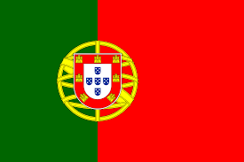Cristiano Ronaldo | 819 | 1141 | 0.71 | 2002-act | 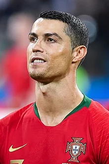 |
| 2 | 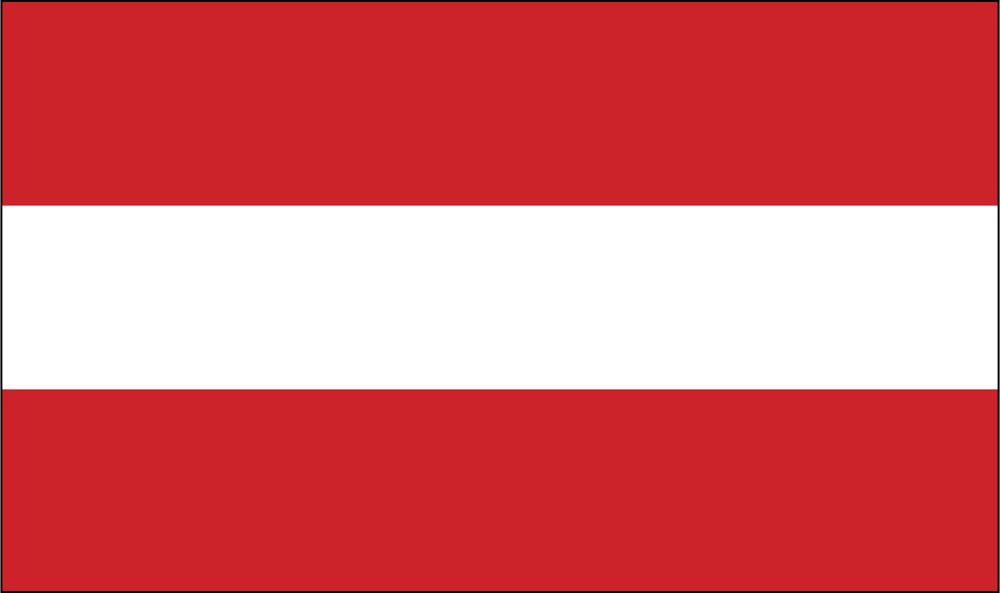Josef Bican | 805 | 530 | 1.51 | 1931-1955 | 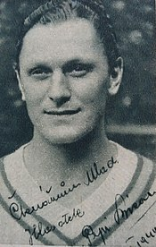 |
| 3 | Lionel Messi |
791 | 1000 | 0.79 | 2004-act | 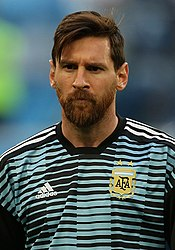 |
| 4 | Romário |
772 | 961 | 0.8 | 1985-2009 | |
| 5 | Pelé |
767 | 831 | 0.92 | 1956-1977 | 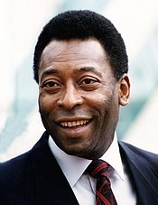 |
| 6 | Ferenc Puskás |
729 | 629 | 1.15 | 1943-1966 | 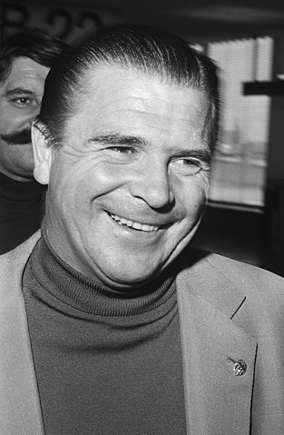 |
| 7 | Jimmy Jones |
647 | 604 | 1.07 | 1947-1964 | |
| 8 | Gerd Müller |
634 | 753 | 0.84 | 1964-1981 | |
| 9 | Robert Lewandowski |
635 | 901 | 0.7 | 2004-act | |
| 10 | Eusébio | 619 | 639 | 0.96 | 1958-1981 | 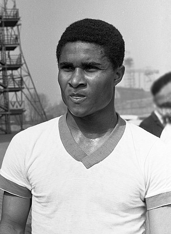 |
| 11 | Joe Bambrick |
616 | 505 | 1.21 | 1926-1943 | |
| 12 | 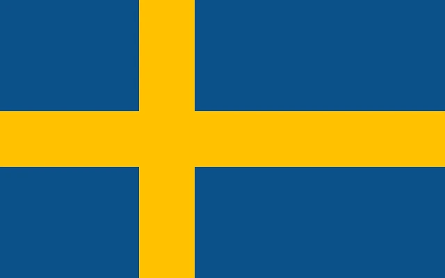Zlatan Ibrahimović | 572 | 983 | 0.58 | 1999-act | |
| 13 | Jimmy McGrory |
552 | 541 | 1.02 | 1992-1937 | |
| 14 | Uwe Seeler |
551 | 653 | 0.84 | 1954-1978 | 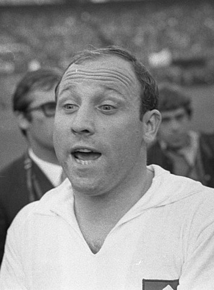 |
| 15 | Alfredo Di Stéfano |
530 | 701 | 0.75 | 1945-1966 | |
| 16 | Luis Suárez |
528 | 880 | 0.6 | 2005-act | 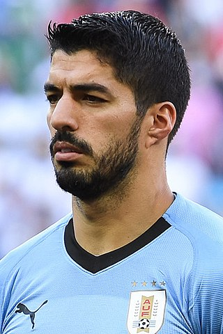 |
| 17 | György Sárosi |
526 | 512 | 1.02 | 1930-1948 | |
| 18 | Isidro Lángara |
525 | 414 | 1.26 | 1930-1948 | 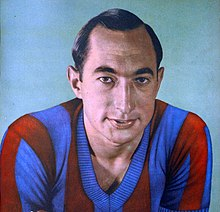 |
| 19 | Zico |
522 | 773 | 0.67 | 1971-1994 | |
| 20 | Roberto Dinamite |
511 | 787 | 0.64 | 1971-1992 | |
| 21 | 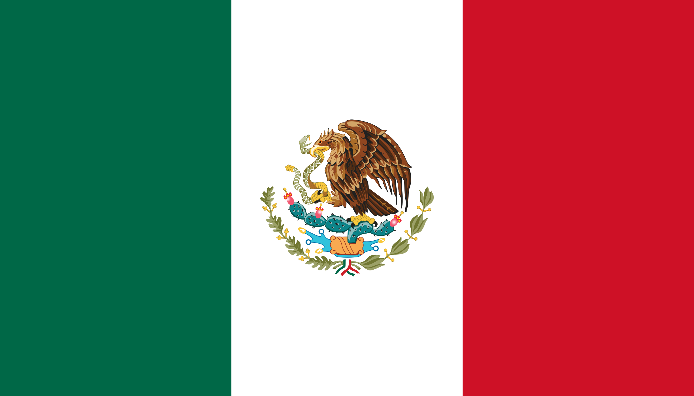Hugo Sánchez | 507 | 880 | 0.57 | 1976-1997 | |
| 22 | Imre Schlosser |
504 | 388 | 1,29 | 1905-1928 | 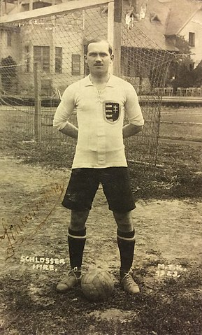 |
| 23 | Franz Binder | 502 | 638 | 0.78 | 1930-1949 |